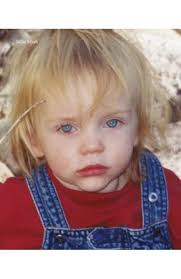
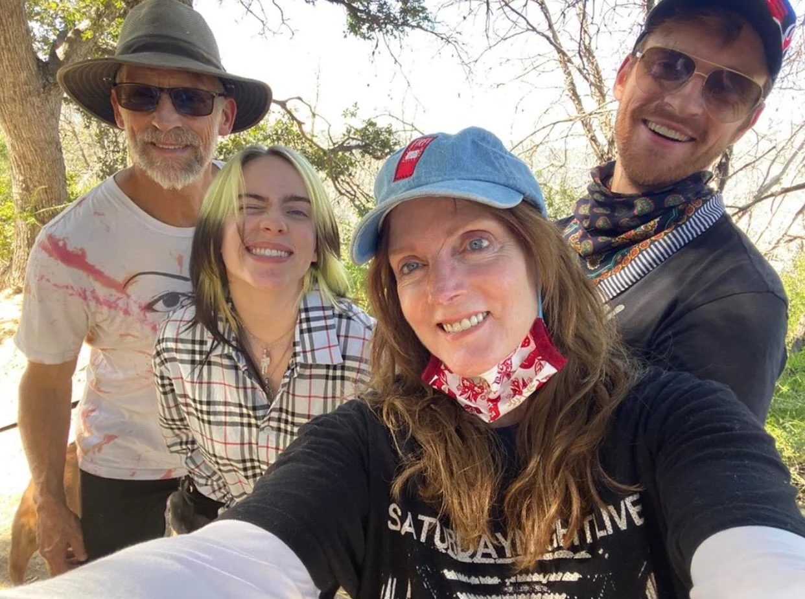

Billie Eilish nació el 18 de diciembre de 2001 en Los Ángeles, California. Fue educada en casa junto a su hermano Finneas, con quien comparte una estrecha relación creativa. Desde pequeña mostró sensibilidad artística, lo que la llevó a componer y cantar desde muy joven.
A lo largo de su carrera, Billie ha hablado abiertamente sobre temas personales como la salud mental, la presión social, la ansiedad y la autoimagen. Se ha convertido en una voz honesta para muchos jóvenes que enfrentan las mismas inseguridades.
Aunque ha mantenido su vida privada con cierto hermetismo, se sabe que tuvo relaciones sentimentales que marcaron su crecimiento emocional. Más allá del amor, lo que destaca es su autenticidad: Billie no teme mostrarse vulnerable, y eso la conecta con millones de personas.
A nivel personal, Billie disfruta de la pintura, la moda, el veganismo, los animales y pasar tiempo con su familia. Ha mencionado que su hogar y sus gatos son su refugio en medio del caos de la fama.